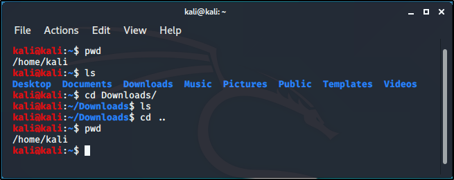

In linux, the termiminal is much more powerful than using GUI (Graphical User Interface). so learning to navigate your way around is essentail.
Commands, uses and meaning:
1. pwd (print working irectory) - tells you what directory you're in.
2. cd (change directory) name of directory - this moves to the name of directory provided.- cd .. - this takes you one step back, outside the present directory.
3. ls (list) - lists folders or files in the current directory
.
NB: Everything in linux is case sensitive.
4. mkdir (make directory) directory name - creates a new folder in present directory.
5. rmdir (remove directory) directory name - deletes whatever directory name is placed after the command..
6. ls -la - shows lists of hidden folders.
7. echo "Hi" > test.txt - creates a file named anything in .txt and writes whatever is in the "" in the created file.
8. cp (copy) text.txt directory name - this will copy the test.txt file into the named directory.
9. rm directory name/file name - to delete file from directory.
10. on keyboard click the up arrow to navigate to old executed commands.
11. clicking tab, while typing, complete the command and if it doesn't, double click tab to get the options of possible characters.
12. mv (move) test.txt directory name/ - moves file to named directory (not copy, cut).
13. locate - it locates whatever is typed after the command, searches through the system and gives possible results.
14. updatedb - updates everything.
14. passwd - change password to whatever you choose.(makesure it's secure and you'll remember)
15. man - is the manual/instructions (man pages) for any command that can be run, eg: man -ls.
